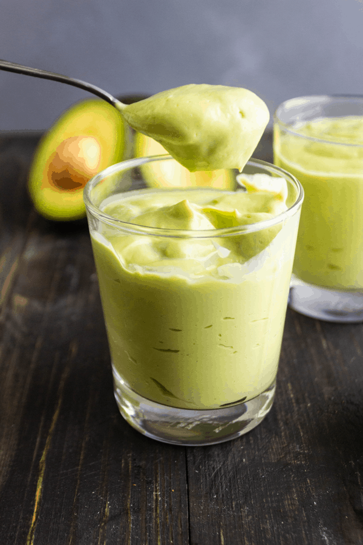

An iconic Vietnamese beverage, the avocado smoothie is a thick mixture of just 3 ingredients: avocados, condensed milk, and milk. Rather than drinking the smoothie, it requires a spoon, much like scooping up yogurt.
Ingredients
2 ripe avocados
2 1/2 tbsp condensed milk (for sweetness)
1/2 cup milk (for consistency)
1/4 cup ice (for coldness)
Condensed milk, milk, and ice can adjusted as preferred.
Steps
Halve the avocados, remove the pits, and scoop the contents into a blender.